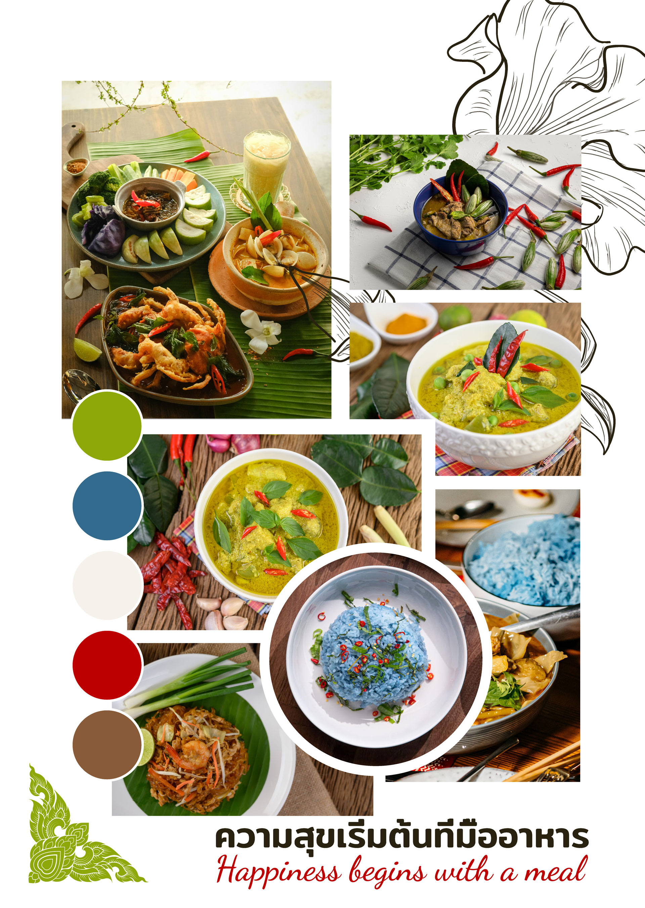
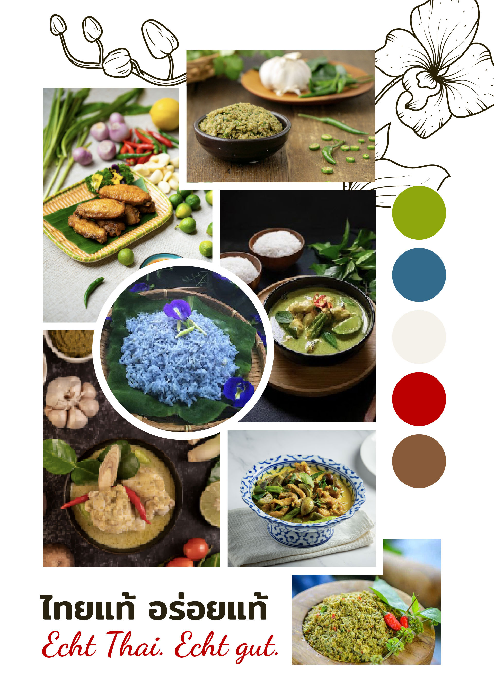
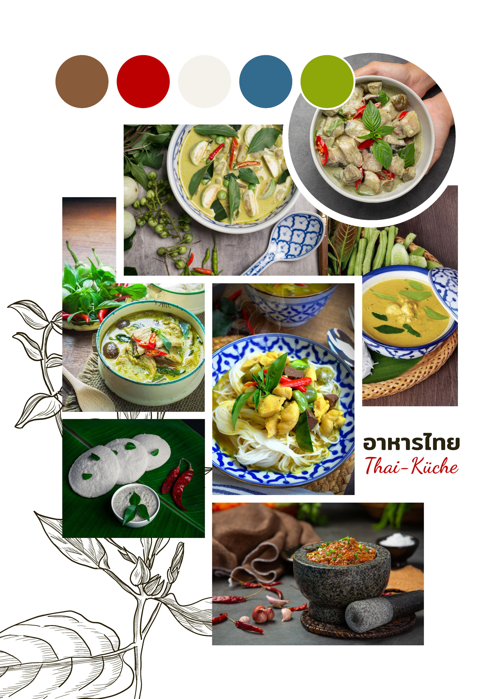

1. Color World & Moodboards
Establishing the visual tone through color swatches, rustic textures, and authentic Thai ingredients—balancing green, blue, white, and red tones.

01. Color Palette

02. Authentic Aesthetics

03. Prop & Texture World
Moodboard sheets defining visual textures, traditional props, and accent color swatches. Click to expand.